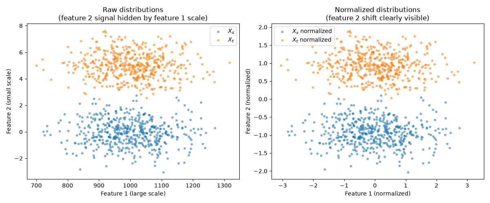

Note
Go to the end to download the full example code.
Sliced Wasserstein Distance with input scaling (DataScaler)
Note
Example added in release: 0.9.7.
This example illustrates why input scaling matters when computing the Sliced Wasserstein Distance (SWD) between distributions whose features have very different magnitudes. Without scaling, the SWD is dominated by high-magnitude features and may miss meaningful differences in low-magnitude features.
The ot.utils.DataScaler class fits normalization statistics once on a
representative sample and applies the same fixed transformation on every call.
This is preferred over re-normalizing inside each SWD call because the
transformation stays consistent across mini-batches during optimization.
# Author: Harguna Sood <harguna.sood@gmail.com>
#
# License: MIT License
import matplotlib.pylab as pl
import numpy as np
import ot
Generate two 2D distributions with mismatched feature scales
Feature 1 is on the scale of 1000 with random noise. Feature 2 is on the scale of 1 with a meaningful 5-sigma shift between source and target distributions.
rng = np.random.RandomState(0)
n = 500
X_s = np.column_stack(
[
rng.normal(1000, 100, n), # feature 1: large scale, no real signal
rng.normal(0, 1, n), # feature 2: small scale, no shift
]
)
X_t = np.column_stack(
[
rng.normal(1000, 100, n), # feature 1: same distribution as source
rng.normal(5, 1, n), # feature 2: shifted by 5 std
]
)
SWD without scaling
Because feature 1 has values ~1000x larger than feature 2, the random projections used in SWD are dominated by feature 1. The meaningful shift in feature 2 is buried.
swd_raw = ot.sliced_wasserstein_distance(X_s, X_t, n_projections=200, seed=0)
print("SWD without scaling: {:.4f}".format(swd_raw))
SWD without scaling: 7.2575
SWD with DataScaler
Fit a standard scaler jointly on both distributions, then pass it to SWD. The same fixed statistics are reused on every call, giving a stable loss across mini-batches.
scaler = ot.utils.DataScaler(norm="standard").fit([X_s, X_t])
swd_scaled = ot.sliced_wasserstein_distance(
X_s, X_t, n_projections=200, seed=0, scaler=scaler
)
print("SWD with DataScaler: {:.4f}".format(swd_scaled))
SWD with DataScaler: 1.2826
Visualize raw vs. scaled distributions
X_s_n = scaler.transform(X_s)
X_t_n = scaler.transform(X_t)
pl.figure(1, figsize=(12, 5))
pl.subplot(1, 2, 1)
pl.scatter(X_s[:, 0], X_s[:, 1], alpha=0.5, label="$X_s$", s=10)
pl.scatter(X_t[:, 0], X_t[:, 1], alpha=0.5, label="$X_t$", s=10)
pl.title("Raw distributions\n(feature 2 signal hidden by feature 1 scale)")
pl.xlabel("Feature 1 (large scale)")
pl.ylabel("Feature 2 (small scale)")
pl.legend()
pl.subplot(1, 2, 2)
pl.scatter(X_s_n[:, 0], X_s_n[:, 1], alpha=0.5, label="$X_s$ normalized", s=10)
pl.scatter(X_t_n[:, 0], X_t_n[:, 1], alpha=0.5, label="$X_t$ normalized", s=10)
pl.title("Normalized distributions\n(feature 2 shift clearly visible)")
pl.xlabel("Feature 1 (normalized)")
pl.ylabel("Feature 2 (normalized)")
pl.legend()
pl.tight_layout()
pl.show()

Total running time of the script: (0 minutes 0.444 seconds)